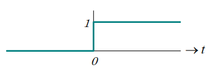
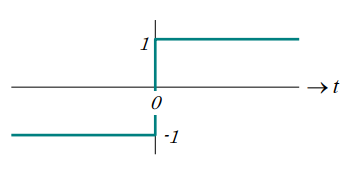
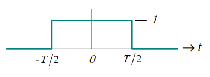
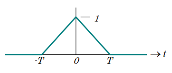
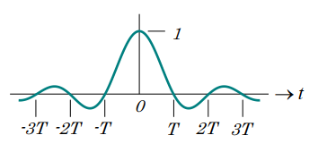
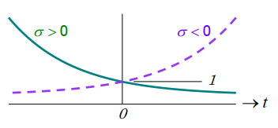
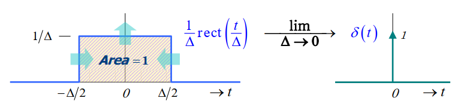
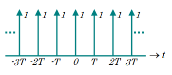

信号与系统学习笔记#1
信号分类
Analog and Digital signals
Continuous-time signal
当\(t\)为一个连续变量时信号\(x(t)\)被称作连续时间信号。
通常用波形图来描述。
Analog signal
A continuous-time signal that can take on any value in the continuous interval \((a, b)\), where \(a\) may be \(-\infty\) and \(b\) may be \(+\infty\).
Digital signal
A continuous-time signal that can take on only a finite number of distinct levels.
Discrete-time signal
如果信号只在离散的时间戳上有定义，那么信号被称为离散时间信号。
一个离散时间信号通常写作\(x_n\), 其中\(n\)是一个整数，并且被描述为数字序列
\[
\{ \dots x_{-1},\ x_0,\ x_1,\dots,\ x_n,\dots \}
\]
离散时间信号可以是自然得到的，比如每日股票平均价格，或者是通过对连续时间信号进行采样得到的。
Analog sequence
A discrete-time signal that can take any value in an interval \((a, b)\), where \(a\) may be \(-\infty\) and \(b\) may be \(+\infty\).
Digital sequence
A discrete-time signal that can take on only a finite number of distinct levels.
Periodic and Aperiodic signals
信号\(x(t)\)具有周期性如果存在一个正值\(T\)使得
\[
x(t)=x(t+T);\ \forall t
\]
使等式成立的最小的\(T\)值被称为“基本周期”（fundamental period），或者简单地说，就是\(x(t)\)的“周期”。
“基本周期”的倒数被称为“基本频率”（fundamental frequency）。
不具有周期性（periodic）的信号具有非周期性（aperiodic）。
Real and Complex signals
信号\(x(t)\)为复信号如果其可被表示为\(a(t)+jb(t)\)，其中\(a(t)\)和\(b(t)\)是实信号，\(j\)为虚数单位。
Cartesian 的形式：
\[
x(t)=a(t)+jb(t)
\]其中
\(a(t)=Re[x(t)]\) Real part of \(x(t)\)
\(b(t)=Im[x(t)]\) Imaginary part of \(x(t)\)
Polar 的形式：
\[
x(t)=r(t)\exp(j\theta(t))
\]其中
\(r(t)=|x(t)|\) Magnitude of \(x(t)\)
\(\theta(t)=\angle x(t)\) Phase Angle of \(x(t)\)
Cartesian 和 Polar 之间的关系
\[
a(t)=r(t)\cos[\theta(t)]\quad b(t)=r(t)\sin[\theta(t)]
\]\[
r(t)=\sqrt {a^2(t)+b^2(t)}\quad \theta(t)=\tan^{-1}(\frac{b(t)}{a(t)})
\]
复信号\(x(t)\)的共轭信号写作\(x^*(t)\)，通过取\(x(t)\)虚部的相反数得到。即替换\(b(t)\)为\(-b(t)\)或替换\(\theta(t)\)为\(-\theta(t)\)。
\(x(t)\)为实信号如果对于任何\(t\)值它的取值都是实数。这是复信号在\(b(t)=0\)或者\(\theta(t)=\pm n\pi=\pm n180°\)的一个特殊情况。
Energy and Power signals
信号\(x(t)\)的总能量\(E\)定义为：
\[
E=\int_{-\infty}^{\infty}|x(t)|^2\mathrm{d}t
\]
\(x(t)\)被称为是一个能量信号当且仅当\(0<E<\infty\)。
信号\(x(t)\)的平均功率\(P\)定义为：
\[
P=\lim_{\tau\to\infty} (\frac{1}{2\tau}\int_{-\tau}^{\tau}|x(t)|^2\mathrm{d}t)
\]
\(x(t)\)被称为是一个功率信号当且仅当\(0<P<\infty\)。
\(E=\mbox{finite}\) → \(P=0\)
\(P=\mbox{finite}\) → \(E=0\)
如果两个条件都不满足那么信号不属于其中任何一种。
基础信号
The Unit Step function
\[
u(t)=
\begin{cases}
1;\ t\geq 0
\newline
0;\ t<0
\end{cases}
\]

The Sign(or Signum) function
\[
\begin{split}
\mathrm{sgn}(t)&=
\begin{cases}
+1;\ t\geq 0
\newline
-1;\ t<0
\end{cases}
\newline
&=2u(t)-1
\end{split}
\]

The Rectangle function
\[
\mathrm{rect}(\frac{t}{T})=
\begin{cases}
1;\ -\frac{T}{2}\leq t < \frac{T}{2}
\newline
0;\ \mbox{elsewhere}
\end{cases}
\]

The Triangle function
\[
\mathrm{tri}(\frac{t}{T})=
\begin{cases}
1-\frac{|t|}{T};\ |t|\leq T
\newline
0;\ |t|>T
\end{cases}
\]

The Sinc(sine Cardinal) function
\[
\mathrm{sinc}(\frac{t}{T})=
\begin{cases}
\frac{\sin(\pi t/T)}{\pi t/T};\ t\neq 0
\newline
1;\ t=0
\end{cases}
\]
\[
\mbox{Note: }
\mathrm{sinc}(x)=
\begin{cases}
0;\ x=\mbox{integer}\neq 0
\newline
1;\ x=0
\end{cases}
\]

Real Exponential signal
\[
x(t)=\exp(-\sigma t)
\]

The Unit Impulse(or Dirac-δ) function
\[
\delta (t)=
\begin{cases}
\infty;\ t=0
\newline
0;\ t\neq 0
\end{cases}
\mbox{and}
\int_{-\varepsilon}^{\varepsilon}\delta (t)\mathrm{d}t=1; \forall \varepsilon >0
\]

The Dirac Comb function
\[
\xi_T(t)=\sum_{n=-\infty }^{\infty }\delta (t-nT)
\]

Sinusoidal Signals
Sinusoidal signals (or sinusoids) 指的是一类周期性函数：
\[
x(t)=\mu\cos(\omega_0t+\phi)=\frac{\mu}{2}[\exp[j(\omega_0t+\phi)]+\exp[-j(\omega_0t+\phi)]]
\]
\[
x(t)=\mu\sin(\omega_0t+\phi)=\frac{\mu}{j2}[\exp[j(\omega_0t+\phi)]-\exp[-j(\omega_0t+\phi)]]
\]
\[
x(t)=\mu\exp[j(\omega_0t+\phi)]=\mu[\cos(\omega_0t+\phi)+j\sin(\omega_0t+\phi)]
\]
其中
\(\mu (>0)\) magnitude (or amplitude)
\(\omega_0\) angular frequency (rad/s)
\(\phi\) phase (radians)
\(\omega_0t+\phi\) instantaneous phase (radians)
一种常见的做法是将\(\omega_0\)替换为\(2\pi f_0\)，其中\(f_0\)是 cyclic frequency (in Hz)。
基本周期可通过\(T_0=\frac{2\pi}{\omega_0}=\frac{1}{f_0}\)求得。
Time-Scaling, -Reversal and -Shifting of Signals
Time-scaling
对于一个信号\(x(t)\)的 time-scaling 是将时间变量\(t\)替换为\(\alpha t\)，其中\(\alpha\)为正实数。
当\(0<\alpha <1\)时，在时间轴进行扩张（expansion）。
当\(\alpha >1\)时，在时间轴进行收缩（contraction）。
Time-reversal
对于一个信号\(x(t)\)的 time-reversal 是将时间变量\(t\)替换为\(-t\)。
Time-shifting
对于一个信号\(x(t)\)的 time-shifting 是将时间变量\(t\)替换为\(t-\beta\)，其中\(\beta\)为实数。
当\(\beta >0\)时，延迟\(\beta\)个单位的时间。
当\(\beta <0\)时，提前\(\beta\)个单位的时间。
 wechat
wechat alipay
alipay